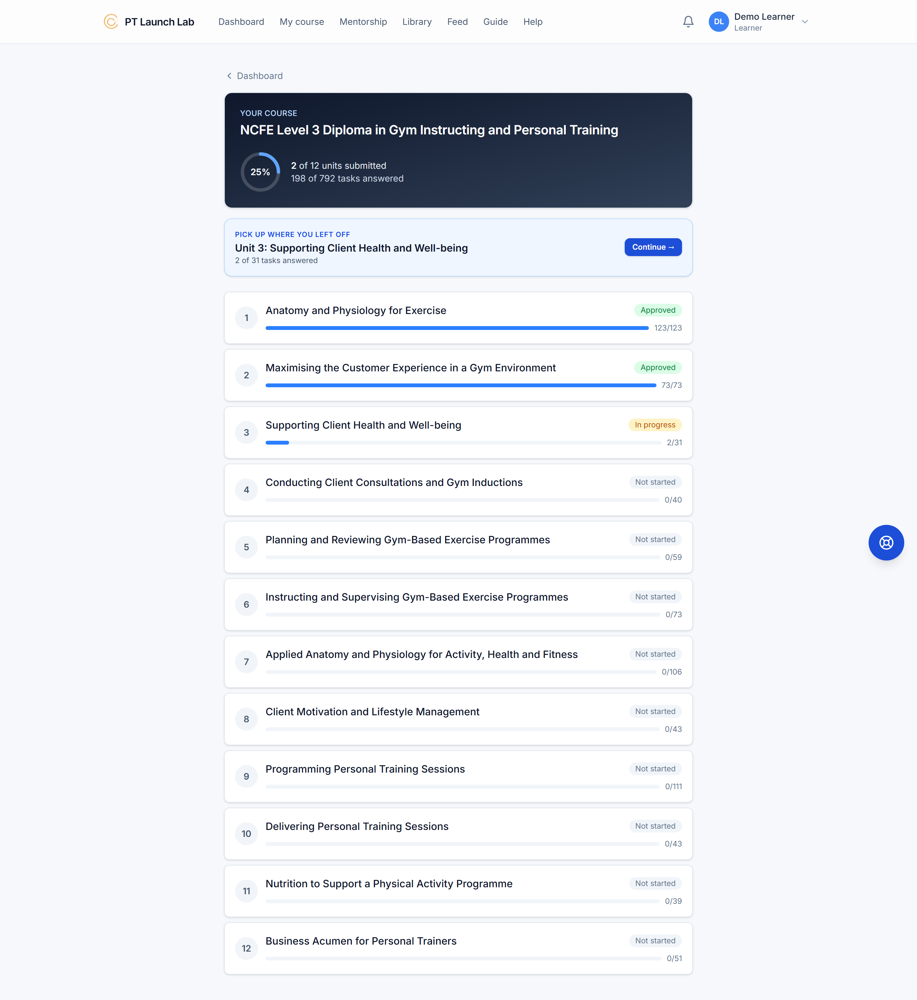
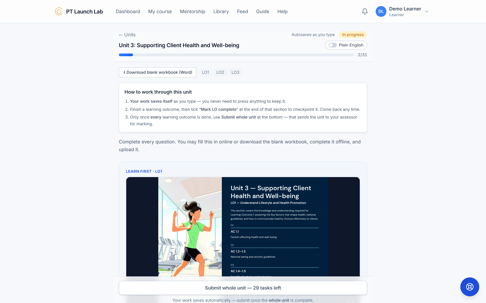
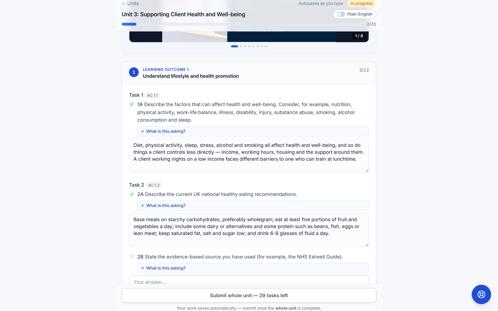
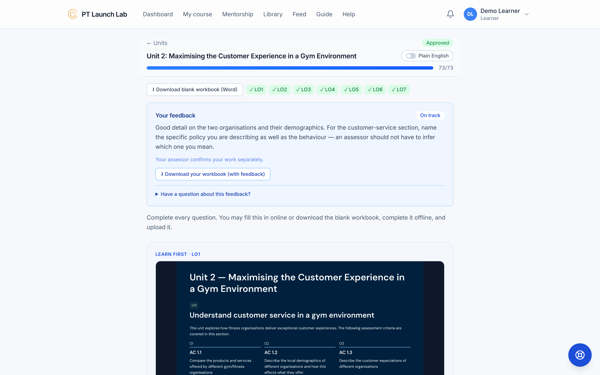
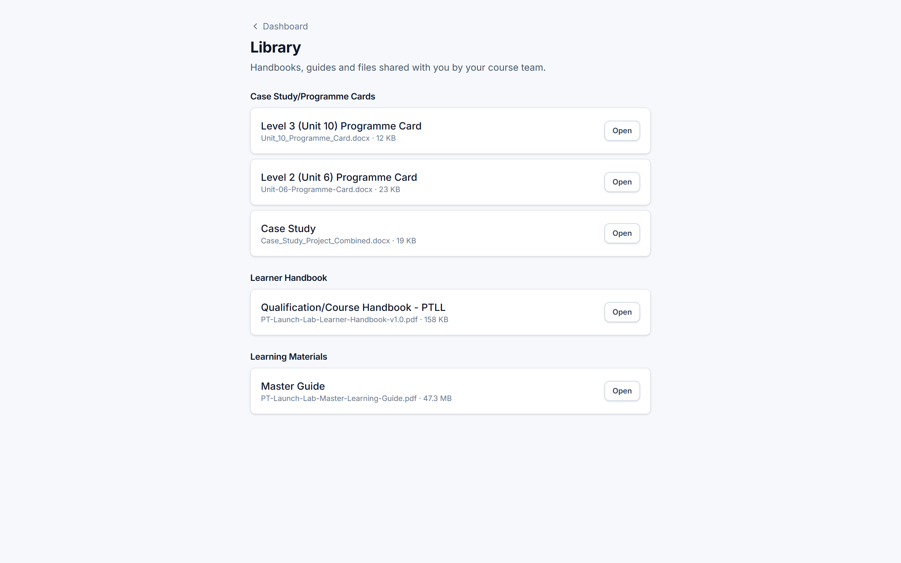

What your members do once they enrol, what they'll see, and how you can help.
The NCFE Level 3 Diploma in Gym Instructing and Personal Training — 12 units, studied online on Praxel, with practical sessions in a gym, one of them filmed.
PT Launch Lab teaches, marks and awards. Your gym refers members and hosts the practical. Nobody at the gym marks anything.
If a learner asks you a course question you are not sure about, send them to their tutor — the PT Launch Lab team member who marks their work and confirms the result — rather than guessing. Wrong answers cost them a resubmission.
Praxel is where the course actually happens — not a portal that links out somewhere else.
Learners sign in at ptll.praxel.co.uk with their own account.
Units, workbook tasks, tutor feedback and their evidence all live on the same site.
No laptop needed — learners can read, answer and submit from their phone.





Units 6 and 10 are the ones that happen on a gym floor. Only unit 10 is filmed — see the next page.
Their tutor watches your member deliver a real personal training session to a real client, on video — one continuous recording or several shorter clips that together cover the whole session: warm-up, main session, cool-down and their coaching points. Up to 10 clips, 90 minutes in total. Alongside it, they upload a programme card — exercises, sets, reps, intensities and progressions — matching what their tutor sees them deliver on camera.
Your member also delivers a real session to a real client for this unit — there's just no video uploaded for it. What they submit is a programme card: exercises, sets, reps, intensities and progressions, matching the session they were observed delivering.
Floor space applies either way. The other three are filming logistics for unit 10 — they don't apply to unit 6.
Filming basics for unit 10: landscape, both trainer and client clearly visible in shot, coaching cues audible throughout.
Both units are marked by their PT Launch Lab tutor from what's uploaded — the video and programme card for unit 10, the programme card for unit 6. Nobody at the gym assesses or signs anything off.
Your agreement makes the gym a referral and distribution partner. That is the whole of it — and it is genuinely useful.
Questions? info@ptlaunchlab.co.uk · partner portal at ptlaunchlab.co.uk/partners